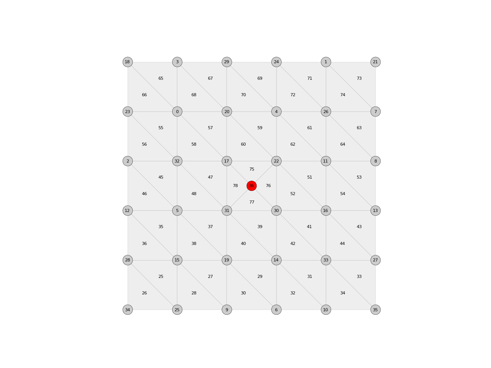

Mesh.split_edge_tri
-
Mesh.split_edge_tri(u, v, t=0.5, allow_boundary=False) Split an edge of a triangle mesh.
- Parameters
u (hashable) – Identifier of the first vertex.
v (hashable) – Identifier of the second vertex.
t (float (0.5)) – The location of the split point along the original edge. The value should be between 0.0 and 1.0
allow_boundary (bool (False)) – Allow splits on boundary edges.
Notes
This operation only works as expected for triangle meshes.
Examples
import compas from compas.datastructures import Mesh from compas.plotters import MeshPlotter from compas.topology import mesh_quads_to_triangles mesh = Mesh.from_obj(compas.get('faces.obj')) mesh_quads_to_triangles(mesh) split = mesh.split_edge_tri(17, 30) facecolor = {key: '#cccccc' if key != split else '#ff0000' for key in mesh.vertices()} plotter = MeshPlotter(mesh) plotter.draw_vertices(text={key: key for key in mesh.vertices()}, radius=0.2, facecolor=facecolor) plotter.draw_faces(text={fkey: fkey for fkey in mesh.faces()}) plotter.show()
